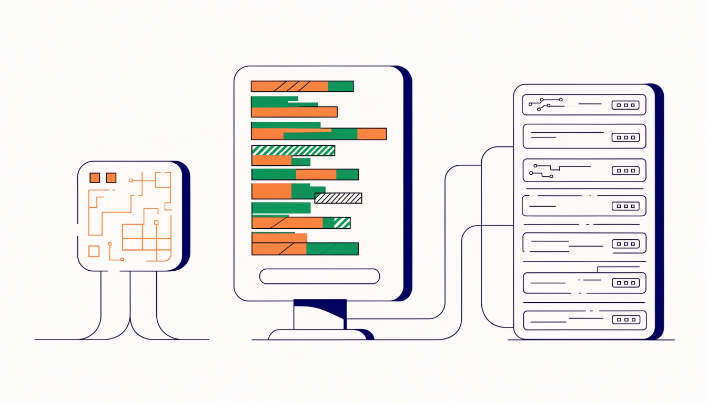

Sector guide
IT & Technical jobs: who can apply, and how selection works
IT & Technical recruitment explained in diagrams: which qualification unlocks which post, every selection stage, and live listings pulled from the official feed.
Not a recruiting authority. Confirm every date, fee and eligibility clause on the official notice linked from each listing.

Who can apply: qualification → post
Filter by qualification or search for a post. Confirm exact age, subject and certificate rules in the linked notice.
7 role paths
No matching posts. Try a broader search or choose all qualifications.
10th Pass
- Data Entry Operator (DEO)Level 2-4Typing 35 wpm, data entry, records
- Computer OperatorLevel 2-3Basic computer operations, filing
10th pass + typing speed. Age 18-27. Computer certificate preferred.
12th Pass / Diploma
- Technician (IT/Hardware/Network)Level 2-4ITI/Diploma in relevant trade
- Junior ProgrammerLevel 4Basic programming, data management
12th pass or ITI/Diploma. Age 18-27. Trade test for Technician.
Graduate (B.Tech/B.E.)
- Scientist/Engineer (NIC, ISRO, DRDO)Level 10B.Tech in CS/IT/ECE
- Probationary Engineer (BEL, HAL, BHEL)Level 7-10B.Tech in relevant branch
- Software Developer (Govt/PSU)Level 6-8B.Tech/MCA in CS/IT
B.Tech/B.E. in CS/IT/ECE. Age 21-30. GATE score for some PSUs.
How selection works, stage by stage
Open a stage for what it checks. The exact order and tests can vary by notification.
-
Written Exam / GATE
Technical MCQs: OS, DBMS, Networks, Programming, Data Structures. 100-200 Qs.
GATE score used by ISRO, DRDO, BARC. Others have own exam.
-
Technical Interview
20-30 min. Technical questions, project discussion, problem-solving.
Focus on core CS subjects and practical experience.
-
Skill Test / Coding
Coding test (for developer roles). Typing test (for DEO).
Qualifying or merit-based depending on post.
-
Document Verification
Degree, marksheets, caste, NOC, experience certificates.
Any discrepancy = rejection.
IT & Technical listings tracked right now
274 listings matched to this sector. Open a detail page to check its source link and current notice.
- Admit card RPSC Rajasthan Police Sub Inspector 2021 Admit Card 2026 Closes 23 June 2021
-
 Result / recruitment update
UPPSC Technical Education 2021 Final Result (Updated)
Closes 12 October 2021
Result / recruitment update
UPPSC Technical Education 2021 Final Result (Updated)
Closes 12 October 2021
- Result / recruitment update UPHESC UP Assistant Professor 2022 Interview Letter Closes 29 August 2022
-
Admit card
UPPSC Lecturer 2023 Exam City Details
Closes 14 July 2023
- Result / recruitment update Bihar Vidhan Parishad Security Guard 2023 Interview Letter Closes 21 August 2023
-
 Admit card
UPSSSC Pharmacist Ayurvedic 2024 Admit Card 2026
Closes 3 March 2024
Admit card
UPSSSC Pharmacist Ayurvedic 2024 Admit Card 2026
Closes 3 March 2024
-
 Admit card
BSF HC Ministerial, ASI Steno 2024 Admit Card
Closes 8 July 2024
Admit card
BSF HC Ministerial, ASI Steno 2024 Admit Card
Closes 8 July 2024
- Admit card BHU School Teacher TGT, PGT, PRT, Principal 2024 Exam Schedule 2026 Closes 19 July 2024
Application checklistApply in five steps Open checklist
Use the recruiting authority’s instructions as the final word. Many portals stop allowing edits after fee payment.
Read the official notice
Confirm qualification, age as on the notice's cut-off date, fee and the last date before you register.
Register on the official portal
Use the link on the notice, not a search result. Keep the registration number and password it gives you.
Fill the form, upload photo and signature
Enter your name exactly as on your Class 10 certificate. Upload the photo and signature in the size and format the portal specifies.
Pay the fee
Pay online and save the receipt. If you claim a fee waiver, the category certificate must already be in the prescribed format.
Download the confirmation
Save the submitted application PDF and the payment receipt. Check the portal again after a day to confirm the form was accepted.
Optional detail
More sector guidance
Open only the section you need; keep the main route short and easy to scan.
Documents to keep ready
Check the official notice for exact formats, dimensions, validity dates and category-specific requirements.
- Passport photograph
Recent, plain light background, within the portal's file-size limit.
- Signature
Signed in black ink on white paper, scanned at the size the portal asks for.
- Class 10 certificate
Proves your date of birth and is the usual minimum qualification.
- Degree or marksheet
Final or provisional, whichever the notice says it accepts.
- Caste or EWS certificate
In the prescribed format from the competent authority, valid on the cut-off date.
- Domicile or residence proof
Needed only where the notice reserves posts for a state or region.
- Photo ID
Aadhaar, PAN, passport or voter card — the name must match the application.
- Fee payment proof
UPI or bank receipt, kept until the admit card is issued.
Syllabus and preparation
Use official syllabus links where available; verify the current pattern on the recruiting authority’s site.
NIC Scientist B / Scientific Officer
Computer-based test on core computer science plus general aptitude, followed by an interview. NIC publishes the exact pattern and marking in each advertisement — read it before you prepare.
- Core computer science — Data structures, algorithms and complexity, operating systems, DBMS, computer networks, software engineering, programming (C, C++, Java), web technologies, computer architecture
- Mathematics — Discrete mathematics, probability, linear algebra, numerical methods
- Aptitude — Quantitative aptitude, reasoning, English
ISRO Scientist / Engineer (ICRB)
Written test on the core engineering discipline at degree level — computer science, electronics, mechanical, civil or the branch advertised — followed by an interview. No general-knowledge section.
- Discipline subjects — For CS: data structures, algorithms, OS, DBMS, networks, theory of computation, compilers, digital logic, computer organisation, software engineering
- Application — ISRO tests depth, not breadth — numericals from the core subjects dominate
DRDO Scientist B (RAC)
Computer-based test on the discipline plus aptitude, shortlisting for interview. Weightage between discipline and aptitude is stated in the DRDO/RAC advertisement.
- Discipline — Core engineering or science of the advertised post at degree level
- Aptitude — Reasoning, quantitative aptitude, English
IBPS SO — IT Officer
Prelims: 150 questions, 125 marks, 120 minutes — Reasoning 50, English 50, Quantitative Aptitude 50. Mains: Professional Knowledge 60 questions, 60 marks, 45 minutes.
- Professional knowledge — DBMS, networking, operating systems, data structures, web technologies, software engineering, information security, basic banking technology
- Prelims sections — Reasoning, English and quantitative aptitude at IBPS prelims standard
When and how to prepare
- 1Months 1–4 — Core subject depth
ISRO, DRDO and NIC test the degree syllabus at GATE level. Pick four subjects that carry the most questions — data structures, algorithms, DBMS and operating systems for CS — and finish them properly before touching aptitude.
- 2Months 3–5 — Numericals and previous papers
These exams ask numericals, not definitions. Solve previous-year papers of ISRO, DRDO and NIC; the same subject areas repeat. Keep a formula and complexity sheet.
- 3Parallel — 30 minutes of aptitude
Aptitude is a small section but a common cut-off failure. Thirty minutes daily is enough for IBPS SO prelims and DRDO aptitude.
- 4Month 6 — Full tests
One full mock a week under timing, then analyse by subject. For IBPS SO, add sectional tests for professional knowledge.
- 5Interview stage
Prepare your final-year project, internship and any published work — DRDO, ISRO and NIC interviews spend most of the time there. Revise the core subjects you listed on the application form.
Career path after joining
Progression depends on cadre, service rules, seniority and departmental exams. Confirm details for the specific post.
- 1 DEO / Computer Operator (Level 2-4)
- 2 Junior Programmer / Technician (Level 4-6)
- 3 Software Engineer / Scientist-B (Level 6-10)
- 4 Senior Scientist / Manager (Level 11-12)
- 5 Chief Scientist / GM (Level 13-14)
Practical details to verify
These checks vary by recruitment; follow the current notification where it differs.
-
PSU IT jobs (BEL, HAL, BHEL) require GATE score. ISRO/DRDO have own exams.
-
Government IT salaries are lower than private sector but job security is higher.
-
NIC (National Informatics Centre) is the largest government IT employer.
-
DRDO/ISRO require B.Tech with high CGPA. Research background preferred.
-
Coding tests are becoming common for government IT roles. Practice LeetCode.
-
Age relaxation: SC/ST 5 years, OBC 3 years. PwD 10 years.
Frequently asked questions
Can I get a government IT job without GATE?
Yes. NIC, SSC JE (IT), UPSC IES (for engineers) don't require GATE. PSUs like BEL, HAL, BHEL prefer GATE but some have own exams.
What is the salary for government IT jobs?
Scientist-B (ISRO/DRDO): ~₹56,100 (Level 10). Probationary Engineer (BEL): ~₹40,000-50,000. NIC Scientist: ~₹56,100. Plus DA, HRA, allowances.
Is coding required for government IT jobs?
For developer roles (NIC, ISRO), yes. For system admin/network roles, less coding but strong fundamentals. DEO roles require typing, not coding.
How competitive are government IT jobs?
ISRO: 1-2 lakh applicants for 300-500 vacancies. NIC: 50,000+ for 500-1000. BEL/HAL: 1-2 lakh for 100-300. Very competitive.
What qualifications are needed for government IT jobs?
B.Tech/MCA for scientist/engineer roles. Diploma/ITI for technician roles. 12th pass for DEO. Some PSUs accept M.Sc (Computer Science).
Where do I find official IT job notifications?
nic.in, isro.gov.in, drdo.gov.in, bel-india.in, hal-india.co.in, bhel.com. SarkariJobs+ links the official notification on every listing.
About this guide
SarkariJobs+ is an independent tracker, not a recruiting authority. The post structure, pay levels and selection stages above are summarised from published recruitment notifications for this sector; where a notification differs, the notification wins. Listing dates, vacancy counts and fees are taken from the feed and credited to the source page.
More sectors: Banking · Defence · Employment News · Judiciary · Medical & Health · Police · Railways · Revenue & Tax · SSC · Teaching · UPSC